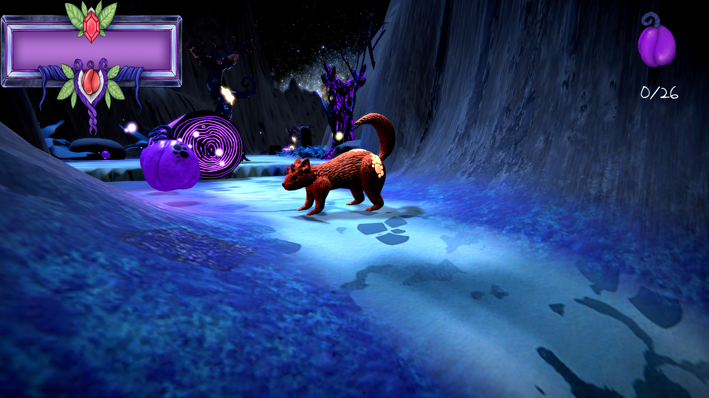
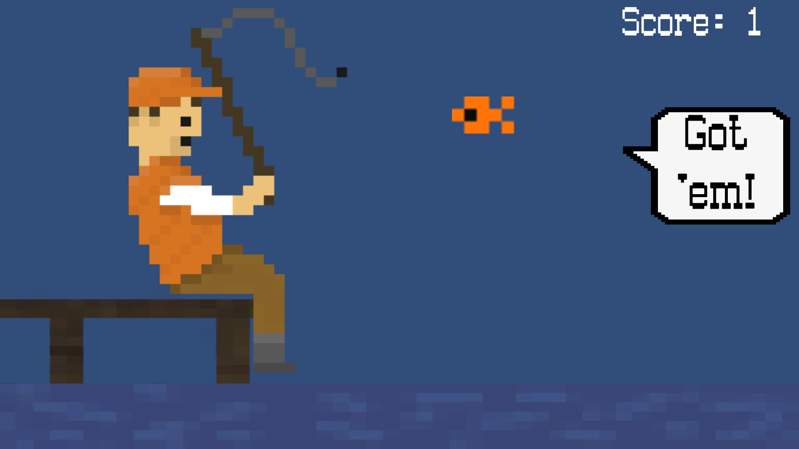
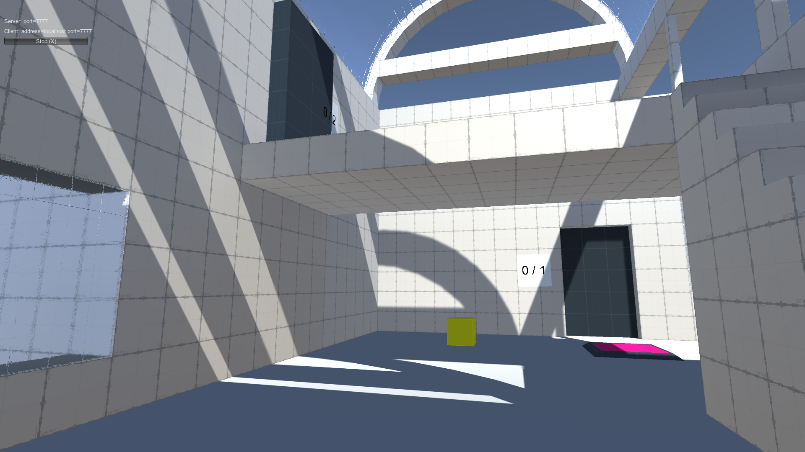

A small test project to work with Unitys sprite system, the new input system and their experimental 2D lighting and shadows.
As my major project at my university I developed this prototype for a 2D puzzle game. The main mechanic which I wanted to test with this was a smooth swapping between side scroller and top down perspective and disabling specific objects in front of the character in runtime.

Mamoru was a group project at my university and my first attempt on a third person character controller for a platformer. -mamoru is about a squirrel like creature which slowly turns into stone due to exposure to a strange fruit. The goal is to collect all fruits and bring them to a holy tree to cleanse them, so no one else can eat from the fruit.

A small project with selfmade sprites to test Unitys sprite system and timing based events.

This project was an assignment at my university. We were allowed to whatever we like as long as it is multiplayer and network based, so I tried creating a small scene as a platformer with puzzle elements. The final product ended up not having any platformer elements but three basic puzzles to solve in multiplayer.